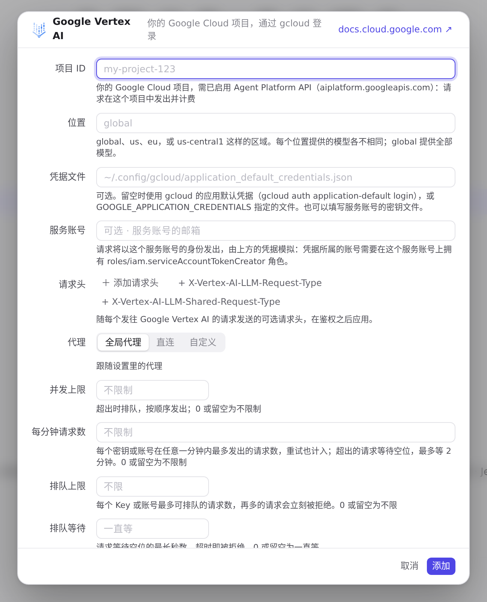
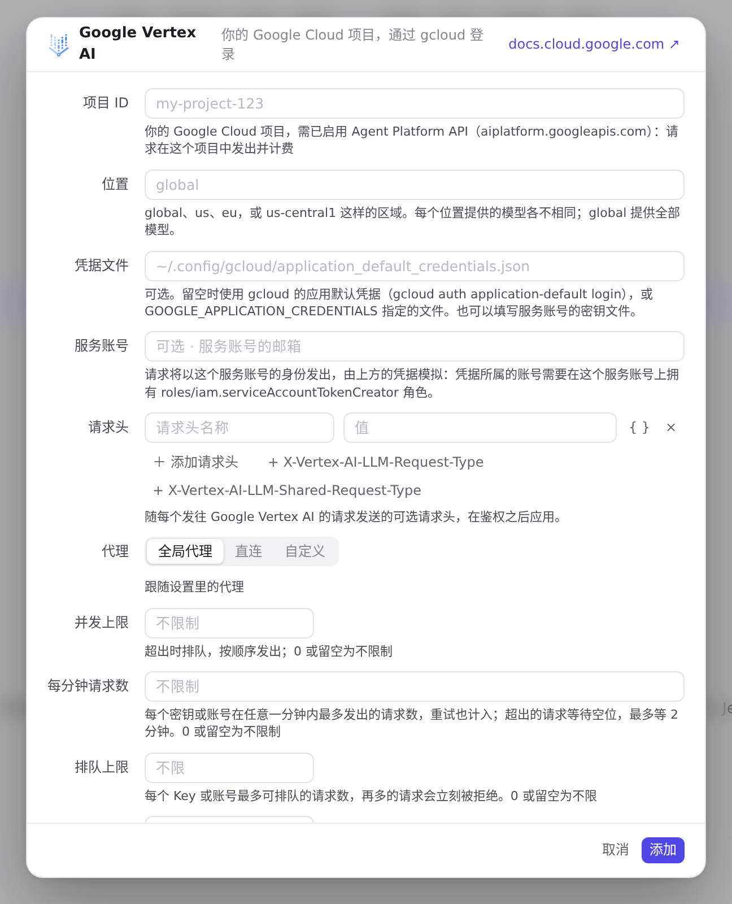
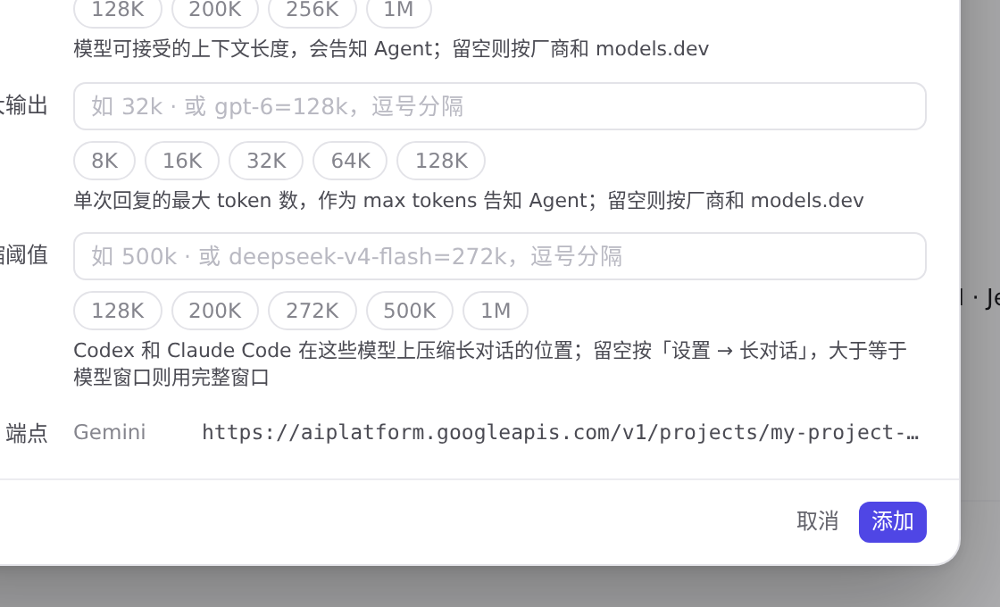
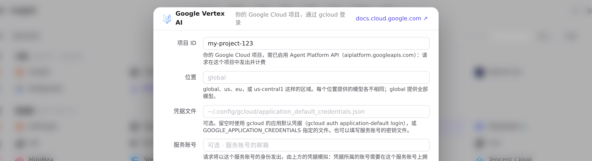
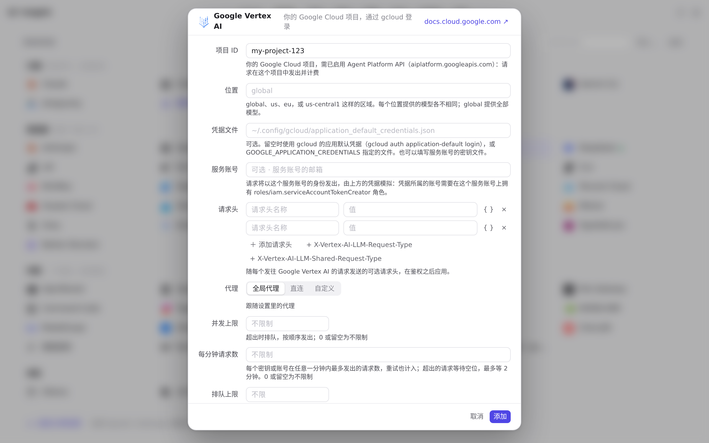

#1122 界面预览
commit 87df653 · 回到 PR · 供应商页新增 Google Vertex AI 预设：它的编辑器用项目 ID、位置、凭据文件、服务账号四个字段取代「API 密钥」，未填项目 ID 时保存被拒，端点一节按项目与位置显示 Vertex AI 地址，保存后供应商行上的标记显示用哪份 Google 凭据签名。「用量 → 请求」里每条请求的协议标记现在也认得 :streamGenerateContent。
红线是鼠标走过的轨迹，红色圆环是一次点击；底部文字是这一步在做什么。空格暂停，← → 逐段查看。
 添加 Google Vertex AI 供应商 · 预设列表里的 Google Vertex AI
添加 Google Vertex AI 供应商 · 预设列表里的 Google Vertex AI

添加 Google Vertex AI 供应商 · 编辑器：项目 ID、位置、凭据文件、服务账号取代「API 密钥」

添加 Google Vertex AI 供应商 · 点「添加」之后的编辑器

添加 Google Vertex AI 供应商 · 填好项目后的「端点」一节

添加 Google Vertex AI 供应商 · 保存后的供应商列表

请求列表上的协议标记 · 每条请求的协议标记